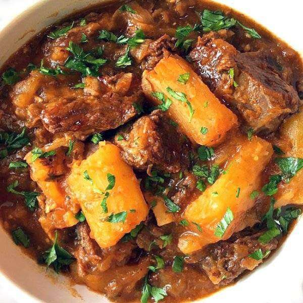

Vaca atolada

INGREDIENTES
• 2 cebolas picadas
• 5 tomates descascados, picados sem sementes
• 4 dentes de alho amassados
• 1 colher (chá) de salsinha picada
• 1 colher (sopa) de vinagre
• 3 cebolinhas verdes picadas
• 1 cubinho de caldo de carne
• 1 kg de costela de vaca
• 1 kg de mandioca descascada e cortada em pedaços
• 2 colheres (sopa) de óleo
PORÇÕES
Serve 8 pessoas
TEMPO DE PREPARO
60 minutos
PASSO A PASSO
1. Em uma panela, coloque as costelas, a cebola, o alho e o oléo.
2. Leve ao fogo e refogue até que dourem.
3. Acrescente os tomates, o vinagre, a salsinha, a cebolinha, o cubinho de caldo de carne e água suficiente para cobrir o conteúdo da panela.
4. Deixe cozinhar, até que a carne fique macia.
5. Então, junte a mandioca e água suficiente para cozinhá-la.
6. Servir quente.